콘크리트기사 (2014-08-17 기출문제)
1과목: 재료 및 배합
1. 시멘트 클링커의 주요광물이 시멘트 특성에 미치는 영향으로 옳지 않은 것은?
- 조기강도 발현에 대한 영향은 C3A가 C2S보다 크다.
- 장기강도 발현에 대한 영향은 C2S가 C3S보다 크다.
- 수화열에 대한 영향은 C3S가 C3A보다 적다.
- 화학저항성에 대한 영향은 C4AF가 C3A보다 적다.
(정답률: 54%)

2. 굵은 골재 체가름 시험을 실시한 결과 다음과 같은 성과표를 얻었다. 굵은 골재 최대치수는?
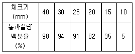
- 20mm
- 25mm
- 30mm
- 40mm
(정답률: 84%)
3. 실리카퓸을 혼합한 콘크리트의 성질에 대한 설명으로 틀린 것은?
- 실리카퓸을 혼합한 콘크리트의 목표 슬럼프를 유지하기 위해 소요되는 단위수량은 혼합량이 증가함에 따라 거의 선형적으로 증가한다.
- 실리카퓸은 비표면적이 작고 미연소 탄소를 함유하지 않기 때문에 목표 공기량을 유지하기 위해 혼합률이 증가함에 따라 AE제의 사용량을 증가시킬 필요가 없다.
- 물-결합재비를 낮추기 위하여 고성능 감수제의 사용은 필수적이다.
- 실리캬퓸을 혼합하면 블리딩과 재료분리를 감소시킬 수 있다.
(정답률: 49%)
4. 굵은 골재의 밀도 및 흡수율 시험 방법으로 옳은 것은?
- 호칭 치수 5mm의 체에 남는 시료만을 철망에 넣고 20±5℃의 물속에서 24시간 담근 후 수중 질량을 측정한다.
- 표면 건조 포화 상태의 질량은 골재를 건조시킨 다음 흡수천 위에 굴려 약간의 수막이 남은 상태에서 측정한다.
- 시료를 절대 건조 상태까지 건조시킬 때는, 수분의 급격한 팽창을 막기 위해 100℃ 미만의 온도에서 건조시킨다.
- 표면 건조 포화 상태의 밀도, 절대 건조 상태의 밀도 및 흡수율은 각각 소수점 이하 첫째 자리까지 구한다.
(정답률: 42%)
5. 물-결합재비 40% 및 62.5%인 콘크리트의 재령 28일 압축강도 시험결과가 각각 46.0MPa 및 26.2MPa 이었다. 재령 28일에서의 압축강도가 35.0MPa인 콘크리트의 물-결합재비로서 적당한 것은?
- 45.0%
- 47.5%
- 50.0%
- 52.5%
(정답률: 69%)
6. 한국산업표준(KS)의 시멘트 물리시험에 대한 설명으로 틀린 것은?
- 길모어 침에 의한 시멘트의 응결시간 시험은 모르타르의 관입시험에 의하여 초결시간과 종결시간을 측정한다.
- 비표면적 시험은 블레인 공기투과장치를 사용하여 시멘트 입자의 크기를 측정한다.
- 비중 시험은 르샤틀리에 비중병을 사용하여 비중을 측정한다.
- 휨강도 시험은 시멘트와 표준사를 질량비 1 : 3 및 물-시멘트비 50%로 하여 제작한 40mm×40mm×160mm 인 각주형 공시체에 대하여 측정한다.
(정답률: 46%)
7. 시멘트의 비중시험을 통해 알 수 있는 것은?
- 풍화의 정도
- 화학저항성
- 동결융해저항성
- 주요 성분의 구성
(정답률: 90%)
8. 다음 골재에 대한 설명으로 옳지 않은 것은?
- 오팔 또는 트리디마이트 등과 같은 광물이 포함된 골재는 알칼리 골재반응을 일으키기 쉬우므로 콘크리트용으로 사용하지 않았다.
- 바다모래를 사용할 경우 콘크리트속에 있는 철근의 녹을 발생시키므로 콘크리트중의 염화물 이온량이 0.3kg/m3 이하가 되도록 관리하였다.
- 입자 크기가 일정한 골재를 사용하면 단위시멘트량이 많이 소요되고 콘크리트경화체의 공극률이 증가하게 되므로 양질의 입도가 되도록 관리하였다.
- 잔골재의 유기불순물 시험을 실시한 결과 표준용액의 색보다 짙었기 때문에 양질의 골재로 판정하여 콘크리트 제조시 사용하였다.
(정답률: 84%)
9. 제빙화학제에 노출된 콘크리트에 있어서 플라이 애시, 고로 슬래그 미분말 또는 실리카 퓸을 시멘트 재료의 일부로 치환하여 사용하는 경우 이들 혼화재 사용량(시멘트와 혼화재 전체에 대한 혼화재의 질량백분율, %)을 나타낸 것으로 틀린 것은?
- 플라이 애시 : 25%
- 고로슬래그 미분말 : 50%
- 플라이 애시와 실리카 퓸의 합 : 50%
- 실리카 퓸 : 10%
(정답률: 81%)
10. 혼화제를 사용한 콘크리트에 관한 설명으로 옳지 않은 것은?
- 나프탈렌계 고성능 감수제는 첨가량이 지나치게 많아지면 슬럼프값 과다로 인한 재료분리와 강도저하의 우려가 있다.
- 나프탈렌계 고성능 감수제는 첨가량이 지나치게 많아지면 공기량 과다현상과 경화지연의 우려가 있다.
- 리그닌 설폰산 칼슘계의 고성능 감수제는 첨가량이 많아지면 경화지연, 강도저하의 우려가 있다.
- 리그닌 설폰산 칼슘계의 고성능 감수제는 첨가량이 많아지면 공기량 과다의 우려가 있다.
(정답률: 46%)
11. 콘크리트의 배합강도를 결정하기 위해서는 압축강도 시험실적이 필요하다. 시험횟수가 규정횟수 이하인 경우 표준편차의 보정계수를 사용하는데, 다음 중 그 값이 틀린 것은?
- 시험횟수 30회 이상 : 1.00
- 시험횟수 25회 : 1.04
- 시험횟수 20회 : 1.08
- 시험횟수 15회 : 1.16
(정답률: 90%)
12. 콘크리트 배합설계에서 단위수량 165 kg, 물-시멘트비 40%, 시멘트 밀도 3.15g/cm3, 공기량 3%로 하는 경우 골재의 절대용적을 구한 값으로 맞는 것은?
- 621ℓ
- 642ℓ
- 674ℓ
- 696ℓ
(정답률: 71%)
13. 다음 표는 골재의 함수상태에 따른 질량을 측정한 결과를 나타낸 것이다. 잔골재와 흡수율과 표면수율은 얼마인가? (순서대로 잔골재흡수율(%), 잔골재 표면수율(%))
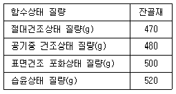
- 5.38, 3.85
- 5.38, 4.00
- 6.38, 3.85
- 6.38, 4.00
(정답률: 62%)
14. 한중콘크리트 배합시 이용하는 일반적인 적산 온도식으로 알맞은 것은? (단, M : 적산온도 (°DㆍD(일), 또는 ℃ㆍD), θ : △t시간 중의 콘크리트의 일평균 양생온도(℃), △t : 시간(일) )
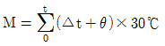
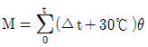
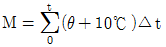
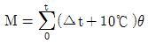
(정답률: 83%)
15. 콘크리트용 골재 시험에 대한 설명으로 옳은 것은?
- 부순 잔골재의 입자 모양 판정 실적률 시험은 2.5mm 체를 통과하고 1.2mm 체에 남아 있는 것을 시료로 사용한다.
- 황산나트륨에 의한 안정성시험을 할 경우, 조작을 3회 반복했을 때의 손실질량백분율을 측정해야 한다.
- KS F 2510에 의해 잔골재의 유기불순물 시험을 실시할 때 분취한 시료를 1⑤±5℃에서 24시간, 일정 질량이 될 때까지 건조시켜야 하며, 약 1kg정도를 사용한다.
- 체가름 시험에서 체 눈에 막힌 알갱이는 파쇄되지 않도록 밀어서 빼내며, 체에 통과한 시료로 간주한다.
(정답률: 34%)
16. 바닷물의 영향을 직접 받는 콘크리트의 경우 내구성에 대하여 각별한 주의를 필요로 한다. 이 환경에 처한 콘크리트를 제조하는데 일반적인 경우 적합하지 않은 재료는?
- 폴리머시멘트
- 플라이애쉬시멘트
- 조강시멘트
- 고로슬래그시멘트
(정답률: 62%)
17. 콘크리트의 배합에서 물-결합재비에 대한 기준을 설명한 것으로 틀린 것은?
- 콘크리트의 수밀성을 기준으로 하여 물-결합재비를 정할 경우 그 값은 50% 이하로 한다.
- 콘크리트의 탄산화 저항성을 고려하여 물-결합재비를 정할 경우 그 값은 45% 이하로 한다.
- 제빙화학제가 사용되는 콘크리트의 물-결합재비를 정할 경우 압축강도와 물-결합재비와의 관계는 시험에 의하여 정하는 것을 원칙으로 한다.
- 콘크리트의 압축강도를 기준으로 물-결합재비를 정할 경우 압축강도와 물-결합재비와의 관계는 시험에 의하여 정하는 것을 원칙으로 한다.
(정답률: 82%)
18. 콘크리트용 화학혼화제 시험(KS F 2560)에서 화학혼화제의 품질규정 항목에 속하지 않는 것은?
- 응결 시간의 차
- 투수계수
- 압축 강도비
- 경시 변화량
(정답률: 72%)
19. 콘크리트용 혼화재료로서 플라이 애시의 품질을 시험하기 위한 시료의 채취 및 조제에 대한 내용으로 잘못된 것은?
- 시료의 수량 및 채취방법은 인도ㆍ인수 당사자 사이의 협정에 따른다.
- 시험용 시료는 시험하기 전에 시험실 안에 넣어 실온과 같아지도록 한다.
- 채취한 시료는 850㎛표준망체로 이물질을 제거한다.
- 조제된 시료는 시험 시까지 시험실과 비슷한 습도가 되도록 시험실의 대기 중에서 보관한다.
(정답률: 78%)
20. 30회 이상의 압축강도 시험 실적으로부터 구한 압축강도의 표준편차는 4.8 MPa이고, 콘크리트의 설계기준 압축강도가 40MPa 일 때, 배합강도는 얼마인가?
- 45.2MPa
- 46.5MPa
- 47.2MPa
- 47.7MPa
(정답률: 64%)
2과목: 제조, 시험 및 품질관리
21. 콘크리트의 크리프에 대한 설명으로 틀린 것은?
- 재하기간 중의 대기의 습도가 낮을수록 크리프가 크다.
- 조강 시멘트를 사용한 콘크리트는 보통 시멘트를 사용한 경우보다 크리프가 크다.
- 시멘트량이 많을수록 크리프가 크다.
- 부재치수가 작을수록 크리프가 크다.
(정답률: 58%)
22. 굳지 않은 콘크리트 중의 공기량에 대한 일반적인 설명으로 틀린 것은?
- 진동다짐에 따른 공기량의 감소는 콘크리트의 슬럼프가 작을수록, 부재 단면이 클수록 빠르다.
- 플라이애쉬를 사용한 콘크리트는 플라이애쉬를 사용하지 않은 콘크리트에 비해 동일 공기량을 얻기 위해서는 많은 양의 AE제가 필요하다.
- AE제를 사용한 콘크리트를 계속 비빌 경우, 공기량은 초기 1~2분 사이에 급속히 증가하고 3~5분 사이에 최대로 되며 그 후에는 서서히 감소한다.
- 비빔 후의 취급 중에 손실되는 공기량은 대부분이 기포경이 큰 것이고, 기포경이 작은 것은 그다지 감소하지 않는다.
(정답률: 25%)
23. 공기량이 콘크리트의 물성에 미치는 영향을 설명한 것으로 틀린 것은?
- 연행공기는 콘크리트의 워커빌리티를 개선하며, 공기량 1% 증가에 따라 슬럼프는 약 25mm 증가한다.
- 동결에 의한 팽창응력을 기포가 흡수함으로써 콘크리트의 동결융해 저항성을 개선한다.
- 동일한 물-결합재비에서는 공기량이 증가할 때 압축강도가 증가한다.
- 일반적으로 공기량이 증가하면 탄성계수는 감소한다.
(정답률: 62%)
24. KS F 4009(레디믹스트 콘크리트)규정에 대한 설명으로 틀린 것은?
- 레디믹스트 콘크리트의 제조 설비로서 믹서는 고정 믹서로 한다.
- 트럭애지테이터로 운반했을 때 콘크리트의 1/3과 2/3의 부분에서 각각 시료를 채취하여 슬럼프 시험을 하였을 경우 슬럼프의 차이가 20mm 이하여야 한다.
- 덤프트럭으로 콘크리트를 운반하는 경우, 운반 시간의 한도는 혼합하기 시작하고 나서 1시간 이내에 공사지점에 배출할 수 있도록 운반한다.
- 일반적으로 레디믹스트 콘크리트의 염소이온 함유량은 0.3kg/m3 이하이어야 한다.
(정답률: 63%)
25. 콘크리트의 압축강도시험 데이터를 보고 불편분산을 올바르게 구한 것은?(오류 신고가 접수된 문제입니다. 반드시 정답과 해설을 확인하시기 바랍니다.)
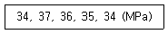
- 1.30
- 1.70
- 2.46
- 3.25
(정답률: 25%)
26. 다음 콘크리트의 비파괴 시험 중 균열의 깊이를 측정하는데 가장 효과적인 것은?
- 초음파법
- 반발경도법
- 어쿠스틱 에미션법
- 중성화시험법
(정답률: 84%)
27. 레디믹스트 콘크리트 제조에 사용할 수 있는 물의 품질기준에 대한 설명으로 틀린 것은? (단, 상수돗물 이외의 물의 품질)
- 현탁 물질의 양 : 2g/L 이하
- 용해성 증발 잔류물의 양 : 1g/L 이하
- 염소이온(Cl-)량 : 200mg/L 이하
- 시멘트 응결 시간의 차 : 초결은 30분 이내, 종결은 60분 이내
(정답률: 68%)
28. 압축강도에 의한 콘크리트의 품질검사에 관한 설명으로 틀린 것은? (단, 설계기준 압축강도로부터 배합을 정한 경우로서 콘크리트표준시방서의 규정을 따른다.)
- 일반적인 경우 재령 28일의 압축강도에 대해 실시한다.
- 1회/일, 또는 구조물의 중요도와 공사의 규모에 따라 100m3마다 1회, 배합이 변경될 때마다 실시한다.
- fck≤35MPa 인 경우 판정기준은 ㉮ 연속 3회 시험값의 평균이 설계기준 압축강도 이상, ㉯ 1회 시험값이 설계기준압축강도의 80%이상 이다.
- fck≥35MPa인 경우 판정기준은 ㉮ 연속 3회 시험값의 평균이 설계기준 압축강도 이상, ㉯ 1회 시험값이 설계기준압축강도의 90%이상 이다.
(정답률: 58%)
29. 비파괴검사에 의하여 검사할 수 없는 것은?
- 콘크리트 강도
- 콘크리트 배합비
- 철근부식 유무
- 콘크리트 부재의 크기
(정답률: 55%)
30. 레디믹스트 콘크리트(KS F 4009)의 품질기준 중 슬럼프 및 슬럼프 플로에 대한 설명으로 틀린 것은?
- 슬럼프가 25mm인 경우 허용 오차는 ±10mm 이다.
- 슬럼프가 80mm 이상인 경우 허용 오차는 ±25mm 이다.
- 슬럼프 플로가 600mm인 경우 허용 오차는 ±100mm 이다.
- 슬럼프 플로가 700mm인 경우 허용 오차는 ±125mm 이다.
(정답률: 70%)
31. KS F 2402 콘크리트의 슬럼프 시험 방법에 규정된 내용중 콘크리트를 채우기 시작하여 슬럼프콘을 들어올려 종료할 때까지 시간 기준으로 옳은 것은?
- 1분 30초 이내
- 2분 이내
- 2분 30초 이내
- 3분 이내
(정답률: 80%)
32. 굳지 않은 콘크리트에서 발생하는 침하균열에 대한 설명으로 틀린 것은?
- 콘크리트를 타설하고 다짐하여 마감작업을 한 이후에도 콘크리트는 계속하여 압밀되는 경향을 보이며, 이러한 현상에 의한 균열을 침하균열이라 한다.
- 철근의 직경이 작을수록 침하균열은 증가한다.
- 슬럼프가 클수록 침하균열은 증가한다.
- 충분한 다짐을 하지 못한 경우나 튼튼하지 못한 거푸집을 사용했을 경우 침하균열은 증가한다.
(정답률: 70%)
33. 아래의 표에서 설명하는 워커빌리티 측정방법은?
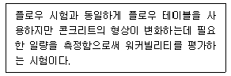
- 리몰딩 시험
- 다짐계수 시험
- 볼관입 시험
- 슬럼프 시험
(정답률: 64%)
34. 다음 콘크리트 믹싱 시 재료에 대한 계량 오차에 대한 설명으로 옳은 것은?
- 시멘트 계량 시 측정 단위는 질량이며, 1회 계량분량의 한게 오차는 ±2% 이내이다.
- 골재의 계량 시 측정 단위는 질량이며, 1회 계량분량의 한계 오차는 ±2% 이내이다.
- 물의 계량 시 측정 단위는 질량 또는 부피의 단위이며, 1회 계량분량의 한계 오차는 ±2% 이내이다.
- 혼화재 계량 시 측정 단위는 질량의 단위이며, 1회 계량분량의 한계 오차는 ±2% 이내이다.
(정답률: 67%)
35. 콘크리트의 품질변동을 정량적으로 나타내는데 있어서, 10개 공시체의 압축강도를 측정한 결과의 평균강도가 25MPa이고, 표준편차가 2.5MPa 인 경우의 변동계수는 얼마인가?
- 10%
- 15%
- 20%
- 25%
(정답률: 68%)
36. 레디믹스트 콘크리트재료 중 골재의 저장 설비에 대한 설명으로 옳은 것은?
- 골재는 칸을 막아 크고 작은 골재를 분리하여 입도가 균일한 상태로 저장하여야 한다.
- 골재 저장 설비는 콘크리트 최대 출하량의 3일분 이상에 상당하는 골재량을 저장할 수 있는 크기로 한다.
- 골재저장 장소의 바닥을 콘크리트로 하고 배수 설비를 한다.
- 인공 경량골재를 사용하는 경우 골재에 살수하는 설비를 갖출 필요가 없다.
(정답률: 40%)
37. 콘크리트의 길이 변화 시험(KS F 2424)에 대한 설명으로 틀린 것은?
- 다이얼 게이지 방법에 사용하는 콘크리트 공시체의 치수는 나비를 높이와 같게 하되, 굵은 골재의 최대 치수의 3배 이상으로 하며, 길이는 나비 또는 높이의 3.5배 이상으로 한다.
- 콤퍼레이터 방법의 시험에는 표선용 젖빛 유리, 각선기, 측정기 등의 기구가 사용된다.
- 콘크리트 건조수축의 정도를 알아보기 위한 시험이다.
- 공시체의 측면 길이 변화를 측정하는 방법으로 다이얼 게이지 방법이 사용된다.
(정답률: 48%)
38. 관리도에 관한 설명으로 옳지 않은 것은?
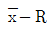
관리도 : 평균값과 범위의 관리도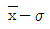
관리도 : 평균값과 표준편차의 관리도- x 관리도 : 측정값 자체의 관리도
- p 관리도 : 단위당 결점수 관리도
(정답률: 76%)
39. 압력법에 의한 굳지 않은 콘크리트의 공기량 시험(KS F 2421)에 대한 설명으로 틀린 것은?
- 시험의 원리는 보일의 법칙을 기초로 한 것이다.
- 공기량 측정기의 용적은 물을 붓지 않고 시험하는 경우(무주수법)는 적어도 5L 정도 이상으로 하여야 한다.
- 공기량을 측정한 콘크리트에서 150㎛의 체를 사용하여 시멘트 분을 씻어 낸 골재를 골재 수정 계수 측정용 시료로 사용할 수 있다.
- 콘크리트의 공기량(%)은 콘크리트의 겉보기 공기량(%)에서 골재 수정 계수(%)를 뺀 값으로 구한다.
(정답률: 65%)
40. 콘크리트의 재료분리를 일으키는 일 없이 운반, 타설, 다지기, 마무리 등의 작업이 용이하게 될 수 있는 정도를 나타내는 굳지 않은 콘크리트의 성질을 무엇이라고 하는가?
- 성형성(Plasticity)
- 성형(Molding)
- 워커빌리티(Workability)
- 블리딩(Bleeding)
(정답률: 81%)
3과목: 콘크리트의 시공
41. 숏크리트에서 뿜어붙이기 성능의 설정 항목으로 틀린 것은?
- 물-결합재비
- 분진 농도
- 초기강도
- 반발률
(정답률: 64%)
42. 프리플레이스트 콘크리트에 사용되는 골재에 대한 설명으로 옳은 것은?
- 굵은 골재의 최소 치수는 15mm 이상으로 하여야 한다.
- 굵은 골재의 최대 치수와 최소 치수와의 차이를 적게 하면 주입모르타르의 소요량이 적어진다.
- 일반적으로 굵은 골재의 최대 치수는 최소 치수의 1.5~2배 정도로 한다.
- 대규모 프리플레이스트 콘크리트를 대상으로 할 경우, 굵은 골재의 최소 치수를 작게 하는 것이 효과적이다.
(정답률: 31%)
43. 고강도 콘크리트 제조방법으로 틀린 것은?
- 물-시멘트비를 감소시킨다
- 실리카퓸 등과 같은 미분말 혼화재료를 사용한다.
- 굵은골재 최대치수를 증가 시킨다.
- 철저히 습윤양생을 하여야 하며, 부득이한 경우 현장 봉함양생 등을 실시한다.
(정답률: 68%)
44. 다음 중 촉진 양생의 종류가 아닌 것은?
- 증기양생
- 습윤양생
- 오토클레이브 양생
- 온수양생
(정답률: 63%)
45. 시공이음에 대한 설명으로 틀린 것은?
- 바닥틀의 시공이음은 슬래브 또는 보의 경간 중앙부 부근에 두어야 한다.
- 바닥틀과 일체로 된 기둥, 벽의 시공이음 위치는 바닥틀과의 경계 부근을 피하여 설치하여야 한다.
- 아치의 시공이음은 아치축에 직각방향이 되도록 설치하여야 한다.
- 시공이음은 부재의 압축력이 작용하는 방향과 직각이 되도록 하는 것이 원칙이다.
(정답률: 52%)
46. 수밀콘크리트에 대한 설명으로 옳은 것은?
- 콘크리트의 소요 슬럼프는 되도록 적게 하여 100mm를 넘지 않도록 한다.
- 공기연행제, 공기연행감수제 등을 사용하는 경우라도 공기량은 6% 이하가 되게 한다.
- 물-결합재비는 50% 이하를 표준으로 한다.
- 단위 굵은 골재량은 되도록 작게 한다.
(정답률: 50%)
47. 공장제품에 대한 설명으로 틀린 것은?
- 일반적인 공장 제품의 압축강도는 재령 14일에서의 압축강도 시험값으로 나타낸다.
- 슬럼프가 20mm 이상인 콘크리트의 배합은 플로우 시험을 원칙으로 한다.
- 프리스트레스 긴장재는 스터럽이나 온도철근 등 다른 철근과 용접할 수 없다.
- 탈형을 즉시 하더라도 해로운 영향을 받지 않는 공장 제품은 콘크리트가 경화되기 전에 거푸집의 일부 또는 전부를 탈형할 수 있다.
(정답률: 38%)
48. 침하균열에 대한 조치사항으로 옳은 것은?
- 콘크리트가 굳기 전에 침하균열이 발생한 경우에는 즉시 다짐을 실시하여 균열을 제거하여야 한다.
- 침하균열이 발생한 후 장시간이 경과한 다음 다짐을 실시하여야 한다.
- 슬래브 또는 보의 콘크리트가 벽 또는 기둥의 콘크리트와 연속되어 있는 경우에는 침하균열을 방지하기 위하여 슬래브, 보의 콘크리트 침하가 거의 끝난 후부터 벽 또는 기둥에 콘크리트를 타설하여야 한다.
- 벽 또는 기둥의 콘크리트가 내민 부분을 갖는 경우에는 침하균열을 방지하기 위하여 슬래브, 보의 콘크리트 침하가 거의 끝난 후부터 벽 또는 기둥에 콘크리트를 타설하여야 한다.
(정답률: 64%)
49. 콘크리트를 타설하고 난 후 연직시공이음부의 거푸집 제거시기로 옳은 것은?
- 여름에는 4~6시간 정도, 겨울에는 8~10시간 정도
- 여름에는 4~6시간 정도, 겨울에는 10~15시간 정도
- 여름에는 6~8시간 정도, 겨울에는 10~15시간 정도
- 여름에는 6~8시간 정도, 겨울에는 15~20시간 정도
(정답률: 64%)
50. 고유동 콘크리트 품질관리에 대한 설명으로 틀린 것은?
- 고유동 콘크리트를 제조할 때에는 유동성, 재료 분리 저항성 및 자기 충전성을 관리하여야 한다.
- 유동성을 슬럼프 플로시험으로 관리할 수 있다.
- 재료 분리 저항성은 깔때기 유하시간으로 관리할 수 있다.
- 자기 충전성은 500mm 플로 도달시간으로 관리할 수 있다.
(정답률: 60%)
51. 해양 콘크리트에 대한 설명으로 틀린 것은?
- 일반 현장 시공을 하며, 해상 대기 중에 놓여진 경우 내구성에 의해 정해지는 콘크리트의 물-결합재비는 45%이하로 하여야 한다.
- 굵은 골재 최대치수가 25mm이고, 물보라 지역에 놓여진 구조물인 경우 내구성으로 정해지는 단위 결합재비량은 300㎏/m3 이상으로 하여야 한다.
- 굵은 골재 최대치수가 20mm이고, 동경융해작용을 받을 염려가 있는 해상 대기 중 콘크리트인 경우 공기량의 표준값은 5%이다.
- 해양 콘크리트 구조물에 쓰이는 콘크리트의 설계기준강도는 30MPa 이상으로 한다.
(정답률: 52%)
52. 매스 콘크리트에서 균열발생을 방지하여야 할 경우의 온도균열지수의 범위는? (단, 철근이 배치된 일반적인 구조물인 경우)
- 0.7 이상 1.0 미만
- 1.0 이상 1.2 미만
- 1.2 이상 1.5 미만
- 1.5 이상
(정답률: 54%)
53. 유동화 콘크리트에 대한 설명으로 틀린 것은?
- 슬럼프 및 공기량 시험은 150m3 마다 1회씩 실시한다.
- 유동화 후에 재료분리, 공기량의 변동 등이 발생할 경우가 있다.
- 유동화 콘크리트의 슬럼프 증가량은 100mm 이하를 원칙으로 한다.
- 유동화 콘크리트의 재유동화는 원칙적으로 할 수 없다.
(정답률: 52%)
54. 숏크리트의 강도에 대한 설명으로 틀린 것은?
- 일반적인 경우 재령 3시간에서 숏크리트의 초기강도는 1.0~3.0MPa를 표준으로 한다.
- 일반적인 경우 재령 24시간에서 숏크리트의 초기강도는 5.0~10.0MPa를 표준으로 한다.
- 일반 숏크리트의 장기 설계기준압축강도는 28일로 설정하며 그 값은 21MPa 이상으로 한다.
- 영구 지보재로 숏크리트를 적용할 경우 재령 28일의 부착강도는 4.0MPa 이상이 되도록 관리하여야 한다.
(정답률: 64%)
55. 콘크리트의 타설에 관한 설명으로 틀린 것은?
- 콘크리트는 그 표면이 한 구획 내에서는 거의 수평이 되도록 타설하는 것을 원칙으로 한다.
- 콘크리트 타설의 1층 높이는 다짐능력을 고려하여 결정하여야 한다.
- 타설 도중에 심한 재료분리가 생겼을 경우에는 거듭 비비기를 실시하여 작업을 진행하여야 한다.
- 타설한 콘크리트는 거푸집안에서 횡방향으로 이동하여서는 안 된다.
(정답률: 64%)
56. 고강도 프리플레이스트 콘크리트에 대해 다음 표의 ( )안에 들어갈 적절한 수치는?
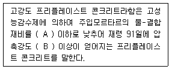
- A : 45%, B : 45MPa
- A : 45%, B : 40MPa
- A : 40%, B : 40MPa
- A : 40%, B : 45MPa
(정답률: 50%)
57. 한중 콘크리트에 대한 설명으로 틀린 것은?
- 한중 콘크리트 타설시 온도는 구조물의 단면치수, 기상 조건 등을 고려하여 5~20℃의 범위에서 정한다.
- 기상조건이 가혹한 경우나 부재 두께가 얇을 경우의 타설시 콘크리트의 최저온도는 10℃ 정도를 확보해야 한다.
- 하루의 평균기온이 4℃ 이하가 예상되는 조건일 때는 한중 콘크리트로 시공하여야 한다.
- 한중 콘크리트의 초기양생 시 소요의 압축강도가 얻어질 때까지 콘크리트의 온도를 0℃ 이상으로 유지하여야 한다.
(정답률: 63%)
58. 서중 콘크리트에 대한 설명으로 틀린 것은?
- 하루 평균기온이 25℃를 초과하는 것이 예상되는 경우 서중 콘크리트로 시공하여야 한다.
- 일반적으로 기온 10℃의 상승에 대하여 단위수량은 2~5% 증가하므로 소요의 압축강도를 확보하기 위해서는 단위 시멘트의 증가를 검토하여야 한다.
- 콘크리트는 비빈 후 즉시 타설하여야 하며, 지연형 감수제를 사용하는 등의 일반적인 대책을 강구한 경우라도 2시간 이내에 타설하여야 한다.
- 콘크리트를 타설할 때는 콘크리트 온도는 35℃ 이하이어야 한다.
(정답률: 52%)
59. 숏크리트 시공에 대한 설명으로 틀린 것은?
- 건식 숏크리트 배치 후 45분 이내에 뿜어붙이기를 실시하여야 한다.
- 습식 숏크리트는 배치 후 60분 이내에 뿜어붙이기를 실시하여야 한다.
- 숏크리트 대기 온도가 10℃ 이상일 때 뿜어붙이기를 실시한다.
- 숏크리트는 타설되는 장소의 대기 온도가 30℃ 이상이 되면 건식 및 습식 숏크리트 모두 뿜어붙이기를 할 수 없다.
(정답률: 65%)
60. 콘크리트 펌핑조건이 아래의 표와 같을 대 최대 소요압력(Pmax)을 대략적으로 구하면?
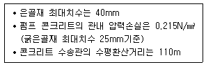
- 11.9N/mm2
- 18.2N/mm2
- 23.7N/mm2
- 35.3N/mm2
(정답률: 31%)
4과목: 구조 및 유지관리
61. 그림과 같은 T형단면에 3-D38(As=3,420mm2)의 철근이 배근되었다면 등가의 압축응력의 깊이 a의 크기는? (단, fck=18MPa, fy=400MPa이다.)
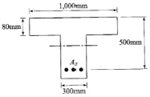
- 280.0mm
- 186.7mm
- 111.4mm
- 89.4mm
(정답률: 40%)
62. 그림과 같이 철근콘크리트 휨부재의 최외단 인장철근의 순인장 변형률Єt이 0.0040일 경우 강도감소계수 ø는? (단, fy=400MPa이고, 기타의 보강은 없다.)
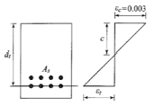
- 0.759
- 0.783
- 0.814
- 0.826
(정답률: 35%)
63. 4변에 의해 지지되는 2방향 슬래브 중 1방향 슬래브로서 해석할 수 있는 경우는? (단, L : 슬래브의 장경간, S : 슬래브의 단경간)
- L/S이 2보다 클 때
- L/S이 1일 때
- S/L가 2보다 클 때
- S/L가 1보다 작을 때
(정답률: 65%)
64. 토목 구조물의 상태평가는 손상의 범위 및 정도에 따라 A, B, C, D, E의 5가지 등급을 산정한다. 이때 상태평가 등급에 대한 다음의 설명 중 틀린 것은?
- A : 문제점이 없는 최상의 상태
- B : 보조 부재에 경미한 결함이 발생하였으나 기능발휘에는 지장이 없으며 경미한 보수가 필요한 상태
- C : 주요 부재에 경미한 결함이나 보조부재에 광범위한 결함이 있으나 전체적인 안전에는 지장이 없는 상태
- E : 주요 부재에 결함이 발생하여 긴급한 보수보강이 필요하며 사용제한 여부를 결정해야 하는 상태
(정답률: 52%)
65. √t법칙을 이용하여 탄산화 깊이를 산정하고자 한다. 준공후 25년 경과한 콘크리트 구조물의 탄산화 깊이가 15mm이라고 할 때, 준공후 100년 된 시점의 탄산화 깊이는 얼마인가?
- 15mm
- 20mm
- 25mm
- 30mm
(정답률: 58%)
66. 보강공법 중에서 외부 케이블 공법의 특징에 대한 설명 중 옳지 않은 것은?
- 콘크리트의 강도 부족이나 열화에 대해서 효과가 크다.
- 보강효과가 역학적으로 명확하다.
- 보강 후의 유지·관리가 비교적 용이하다.
- 편향부를 전단보강부에 설치하고, 외부 케이블의 연직분력을 고려함으로써 설계전단력을 크게 감소시킬 수 있다.
(정답률: 56%)
67. 초음파속도법에 대한 설명 중 가장 적절치 않은 것은?
- 측정법은 표면법, 대칭법, 사각법이 있다.
- 콘크리트의 균질성, 내구성 등의 판정에 이용된다.
- 음속만으로 콘크리트 압축강도를 정확하게 알 수 있다.
- 콘크리트의 종류, 측정대상물의 형상·크기 등에 대한 적용상의 제약이 비교적 적다.
(정답률: 59%)
68. 콘크리트 자체의 변형으로 인해 생기는 수축균열의 원인에 속하지 않는 것은 무엇인가?
- 외부의 기온 변화
- 건조수축
- 수화열 발생
- 염화물 침투
(정답률: 42%)
69. 콘크리트를 각종 섬유로 보강하여 보수공사를 진행할 경우 섬유가 갖추어야 할 조건으로 거리가 먼 것은?
- 섬유의 압축 및 인장강도가 충분해야 한다.
- 섬유와 시멘트 결합재와의 부착이 우수해야 한다.
- 시공이 어렵지 않고 가격이 저렴해야 한다.
- 내구성, 내열성, 내후성 등이 우수해야 한다.
(정답률: 72%)
70. 구조물의 부재, 부재간의 연결부 및 각 부재 단면의 휨모멘트, 축력, 전단력, 비틀림모멘트에 대한 설계강도는 공칭강도에 강도감소계수를 곱한 값으로 하여야 한다. 이러한 강도감소계수의 규정으로 틀린 것은?
- 전단력과 비틀림모멘트 : 0.75
- 포스트텐션 정착구역 : 0.65
- 스트럿-타이 모델에서 스트럿, 절점부 및 지압부 : 0.75
- 무근콘크리트의 휨모멘트, 압축력, 전단력, 지압력 : 0.55
(정답률: 50%)
71. 지간이 4m인 직사각형 단면의 단순보가 있다. 이 보에 자중을 포함한 고정하중 20kN/m와 활하중10kN/m가 작용하고 있을 때 계수 휨모멘트강도는 얼마인가?
- 30kN·m
- 40kN·m
- 60kN·m
- 80kN·m
(정답률: 24%)
72. fck=40MPa, fy=400MPa이고, bw=300㎜, d=500㎜인 단철근 직사각형 보의 최소 철근량은?
- 500mm2
- 525mm2
- 593mm2
- 672mm2
(정답률: 30%)
73. 철근콘크리트 보에서 스터럽을 배근하는 주 목적은?
- 철근의 인장강도가 부족하기 때문에
- 콘크리트의 휨에 의한 압축강도가 부족하기 때문에
- 콘크리트의 휨에 의한 인장강도가 부족하기 때문에
- 콘크리트의 사인장 강도가 부족하기 때문에
(정답률: 65%)
74. 콘크리트 내에서 염소이온의 확산에 영향을 주는 인자가 아닌 것은?
- 물-결합재비
- 철근의 부식여부
- 모세관 공극의 양
- 양생조건
(정답률: 27%)
75. 보강공법 중에서 연속 섬유 시트 접착공법의 특징에 대한 설명 중 옳지 않은 것은?
- 단면강성의 증가가 크다.
- 보강효과로서 균열의 구속효과와 내하성능의 향상효과가 기대된다.
- 내식성이 우수하고, 염해지역의 콘크리트 구조물 보강에 적용할 수 있다.
- 섬유시트는 현장성형이 용이하기 때문에 작업공간이 한정된 장소에서 작업이 편리하다.
(정답률: 59%)
76. 콘크리트의 구조설계기준에서 처짐 계산을 하지 않아도 되는 경우의 보 또는 1방향 슬래브의 최소 두께 규정은 설계기준항복강도 400MPa의 철근에 대한 값에 대해 규정한다. 설계기준항복강도가 400MPa이 아닌 경우에 최소 두께 산정에 사용하는 계수의식으로 옳은 것은?
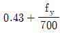
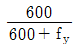
- 0.85
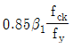
(정답률: 66%)
77. 알칼리골재반응은 콘크리트 내부에 국부적인 팽창압력을 발생시켜 구조물에 균열을 발생시킬 수 있다. 이러한 알칼리골재반응의 대부분을 차지하는 반응은 다음 중 어느 것인가?
- 알칼리-탄산염반응
- 알칼리-실리카반응
- 알칼리-실리케이트반응
- 알칼리-황산염반응
(정답률: 70%)
78. 아래 그림과 같은 직사각형 단철근보의 설계전단강도(øVn)는? (단, 스터럽(D13, 1본의 단면적=126.7mm2)은 수직으로 설치되며, 간격(s)은 150mm이고, fck=24MPa, fyt=400MPa이다.)
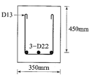
- 182.5kN
- 243.4kN
- 324.5kN
- 432.7kN
(정답률: 48%)
79. 아래 그림과 같은 복철근 보 단면의 설계휨강도(øMn)을 구하면? As=3,042mm2, As=774mm2, fck=28MPa, fy=350MPa이고, 파괴시 압축철근이 항복하며, 이 단면은 인장지배 단면이다.)
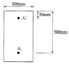
- 273.0kN·m
- 403.5kN·m
- 547.5kN·m
- 685.0kN·m
(정답률: 30%)
80. 콘크리트 비파괴시험 방법 중 전자파 레이더법에 대한 설명으로 틀린 것은?
- 부재 두께를 조사할 수 있다.
- 철근부식의 상태를 조사할 수 있다.
- 철근위치를 조사할 수 있다.
- 골재노출(충전 불량)의 결함부를 파악할 수 있다.
(정답률: 47%)